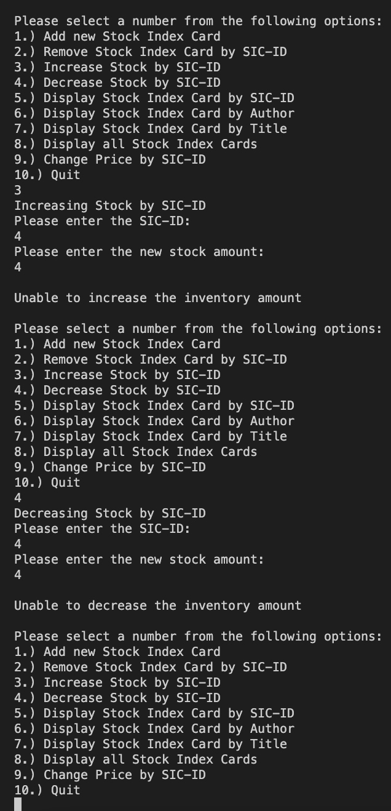
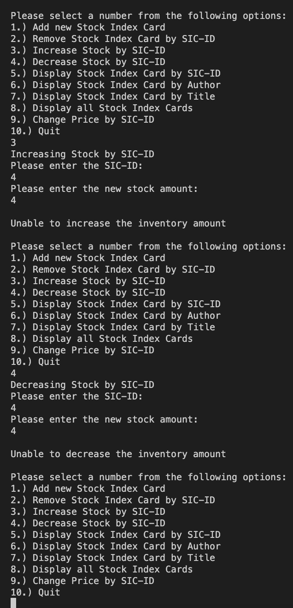

Project Description:
I created an inventory management system working with Stock Index Cards for a book store using Java objects, arrays, scanners, and strings. A Stock Index Card records the following information:
-
SIC-ID: This is a unique integer used to identify every title in the inventory.
Title: The title of the book being sold.
Author: The author of the book.
Price: The price the book is being sold for.
Quantity: The number of copies the bookstore has of the book
-
1. Add new Stock Index Card (will need to prompt the user to enter SIC-ID, Title, Author, Price, Quantity)
2. Remove Stock Index Card by SIC-ID
3. Increase Stock by SIC-ID (ask for the quantity)
4. Decrease Stock by SIC-ID (ask for the quantity)
5. Display Stock Index Card by SIC-ID
6. Display Stock Index Card by Author (show all that apply)
7. Display Stock Index Card by Title (show all that apply)
8. Display All Stock Index Cards
9. Change price by SIC-ID (price can't be negative)
10. Quit
Examples of Project:


 
